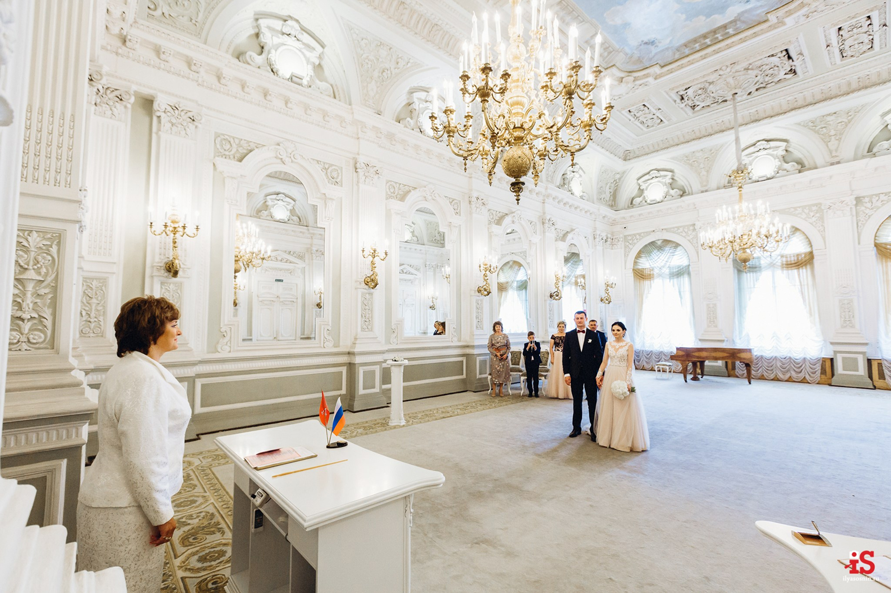
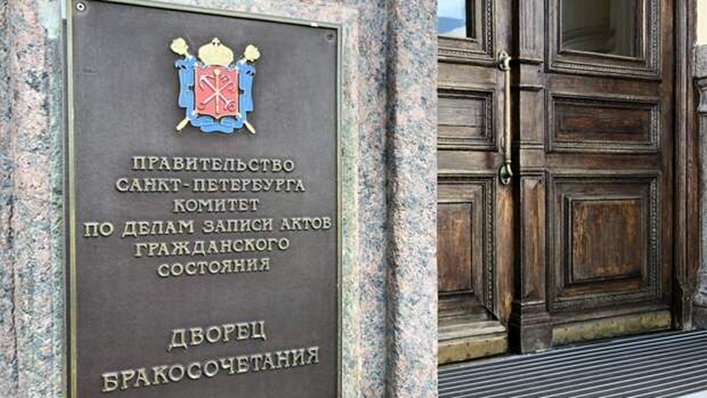

Я надеюсь что все будет так ,как в моей голове . Я не тупо надеюсь и сижу жду ,я все делаю для этого.чтобы у нас была крепкая семья,все наши совместные планы сбылись и мы нашли дела по душе,жили душа в душу радуясь каждый день друг другу как и сейчас. я люблю тебя безумно и моя цельв жизни это ты и семья с тобой - ведь ты прекрасна и я хочу только этого
ты являешься моим главным идолом в жизни и я всегда прислушиваюсь тебя и слушаю.мне всегда хочется быть лучше и показывать тебе что я расту для нас .я стал более внимательным,добрым и открытым . я понял что могу быть собой рядомс тобой и мне не будет стыдно. я могу довериться тебе и меня не уронять в лужу.я просто хочу делать всё для тебя и кайфую просто от этого (даже сейчас когда мы вместе чему-то учимся).
я вижу тебя своим ангелом. невероятно красивой , умной , милой,доброй,чувственной и творческой . я смотрю на тебя всегда с любовью и радостью что ты у меня есть и даже спустя года я смотрю на тебя так же как и раньше и буду смотреть так всегда. я вижу тебя мамой наших будущих детей.вижу тебя счастливой женой в счастливой браке т.к. я не считаю что мы супер скучные и плохие люди.тебе есть что рассказать кому то и даже научить . ты умна и отличаешься этим от серой массы людей. среди фэшена на ботокс и пародии на кардашьян, ты остаёшься всегда самой красивой и всегда выбор будет в твою пользу . я очень благодарен что ты выбрала меня и я стараюсь как могу.
как уже и писал выше , я вижу что мы счастливы и безумно рады видеть друг друга каждый деньмы любим друг друга и я не видел чтобы была такая связь крепкая между людьми ,чтобы так показывали свои чувства.в моих глазах мы выглядим очень взросло и невероятно сильно выросли вместе как отношения так и мы сами.мы вместе чему то учимся и бывают ссоры , но без них мы бы ничего и не научились.у нас вся жизнь впереди и я рассчитываю ё провести с тобой
я просто хочу быть с тобой и просто быть. я не хочу сбежать от тебя как от другого общества. ямаксимально искренен с тобой,а это важно для меня,ведь ты знаешь что эмоции и какое то подавление я не люблю и не считаю нужным держать в себе.я хочу с тобой говорить,тебя трогать , делать абсолютно всё с тобой . вот прям вообще все , ты мне подходишь полностью и мы так сильно привыкли друг к другу что я уже не хочу представлять свою жизнь как то по другому. я рад что все складывается так как есть и исходя из этого мы с тобой делаем выводы и что то придумываем.